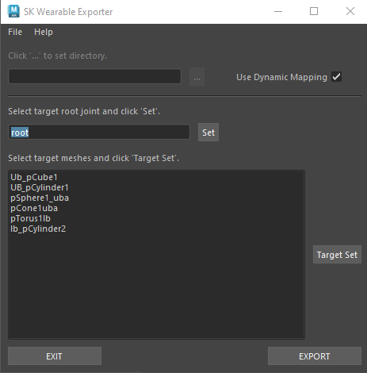
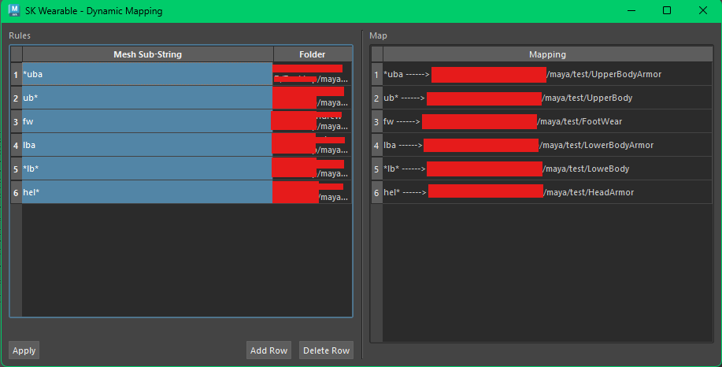
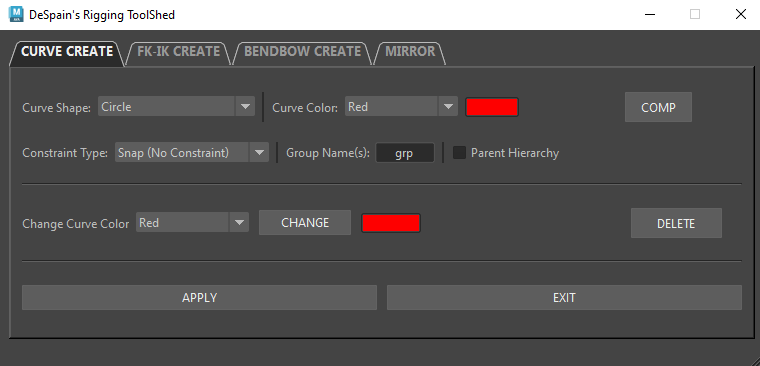
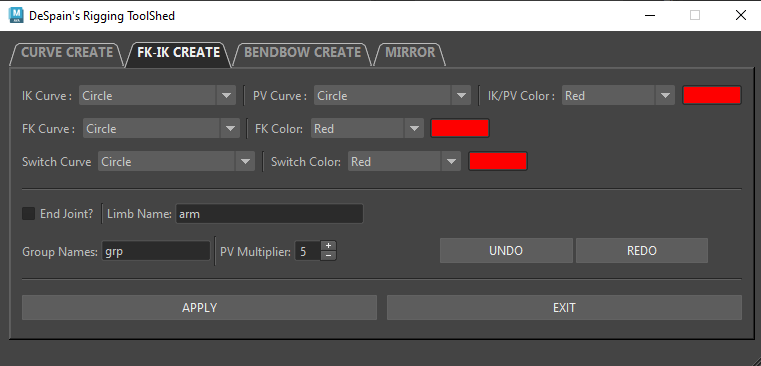
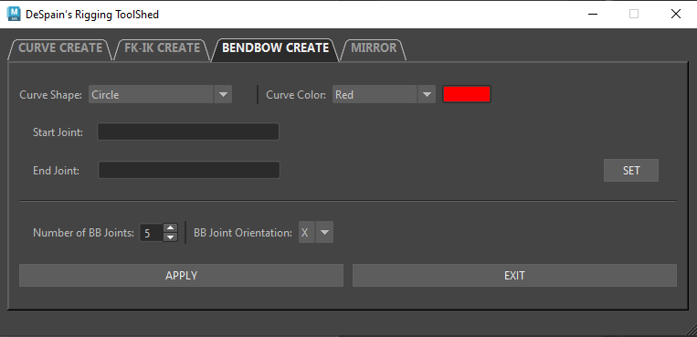

This tool was a prototype I developed using Python and PyQt to streamline the export of clothing assets for characters into Unreal Engine. At the time, one of the teams I was part of was building a character customization system with a large number of categorized clothing items. This was a proof of concept I created at home.
To manage this large volume of assets, I built a tool that automatically organizes and exports them based on user-defined mappings. The tool allows users to set up dynamic mappings for different clothing categories, such as shirts, pants, shoes, and really whatever the user needs. It then processes the assets in Maya, matches their names to the specified categories, and exports them into the correct folder structure for Unreal Engine. This was an early prototype and proof of concept.


This was an early version of an auto-rigging tool I developed toward the end of my time in college. It was built using Python and PyQt and was designed to automate some of the more tedious aspects of rigging, such as creating IK/FK controls and other limb systems. This tool was my first initial foray into tool development and pipeline support, and it provided a valuable learning experience in Python, PyQt, linear algebra, and Maya modules. Looking back, I wish I had a stronger foundation in object-oriented programming so I could have built it with greater scalability and better integration into a personal pipeline. However, it was a great learning experience and a stepping stone toward more advanced tools I am currently developing. Check out DS Studio for a more advanced, work-in-progress version of an auto-rigger and pipeline that I am currently developing.




